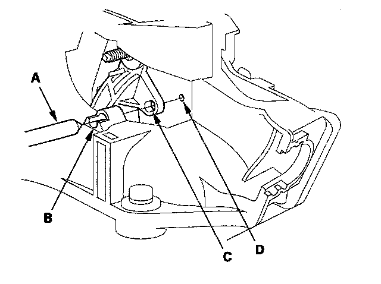

Shift Cable: Adjustments
Shift Cable Adjustment1. Remove passenger's center console trim.
2. Remove the beverage holder inner case.
3. Shift the transmission into the R position.
4. Remove the nut securing the shift cable end.
5. Press the holder lock release (A) and pull out the socket holder (B) to remove the shift cable (C) from the shift lever bracket base (D). Do not remove the shift cable by pulling the shift cable guide (E) and damper (F).
6. Push the shift cable (A) until it stops, then release it. Pull the shift cable back one step so that the shift position is in R. Do not hold the shift cable guide (B) and damper (C) to adjust the shift cable.
7. Turn the ignition switch ON (II) and verify that the R position indicator comes on.
8. Turn the ignition switch OFF.
9. Place the shift lever in the R position, then insert tapered tip 6.0 mm (0.24 in.) pin (A) through the positioning hole (B) on the shift lever bracket base, through the positioning hole (C) on the shift lever, and into the positioning small hole (D) on the shift lever bracket base. The shift lever is secured in the R position.

10. Align the socket holder (A) on the shift cable (B) with the slot in the bracket base (C) then slide the holder into the base. Install the shift cable end (D) over the mounting stud (E) by aligning its square hole (F) with the square fitting (G) at the bottom of the stud. Push the holder until it snaps securely in place. Do not install the shift cable by holding the shift cable guide (H) and damper (I).
11. Verify that the shift cable end (A) is properly installed on the mounting stud (B).
12. If improperly installed, remove the shift cable from the bracket base, and reinstall the shift cable. Do not install the shift cable end on the mounting stud while the shift cable is on the bracket base.
13. Install and tighten the nut.
14. Remove the 6.0 mm (0.24 in.) pin that was installed to hold the shift lever.
15. Turn the ignition switch ON (II). Move the shift lever to each position, and verify that the A/T gear position indicator follows the transmission range switch.
16. Shift to the P position, and check that the shift lock works properly. Push the shift lock release, and verify that the shift lever releases, and also check that the shift lever locks when it is shifted back to the P position.
17. Install the beverage holder inner case.
18. Install the passenger's center console trim.